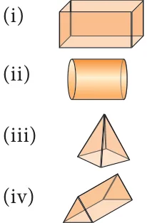
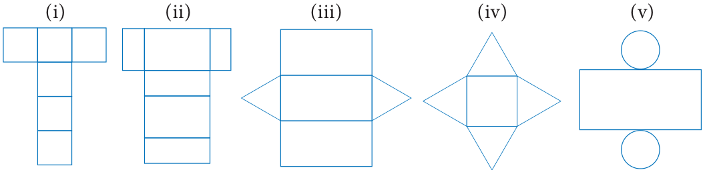
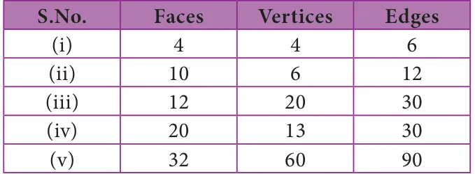

- 1.Fill in the blanks:
- (i)The three dimensions of a cuboid are ____, _____ and ____.
- (ii)The meeting point of more than two edges in a polyhedron is called as ______.
- (iii)A cube has __________ faces.
- (iv)The cross section of a solid cylinder is __________.
- (v)If a net of a 3-D shape has six plane squares, then it is called ______.
- 2.Match the following:

- (a) Cylinder
- (b) Cuboid
- (c) Triangular Prism
- (d) Square Pyramid
- 3.Which 3-D shapes do the following nets represent? Draw them.

- 4.For each solid, three views are given. Identify for each solid, the corresponding Top,
Front and Side (T, F and S) views.

- 5.Verify Euler’s formula for the table given below.
